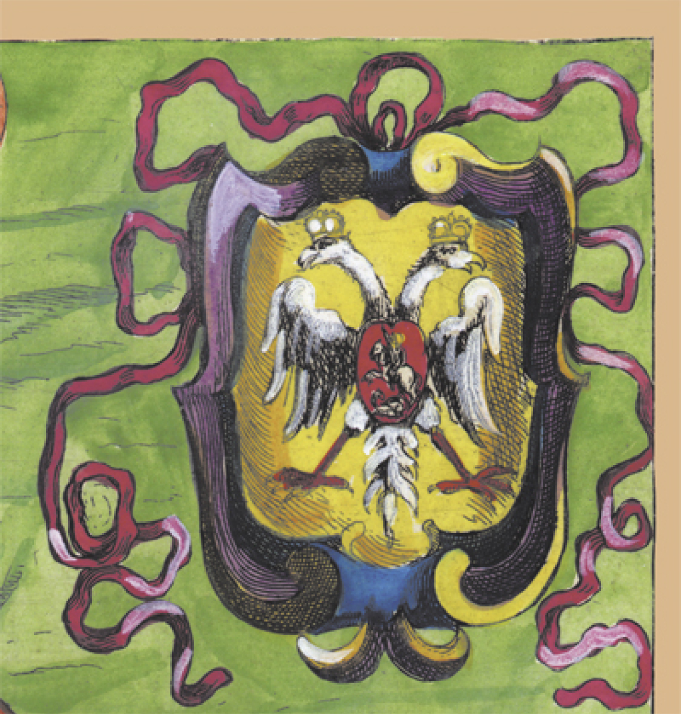
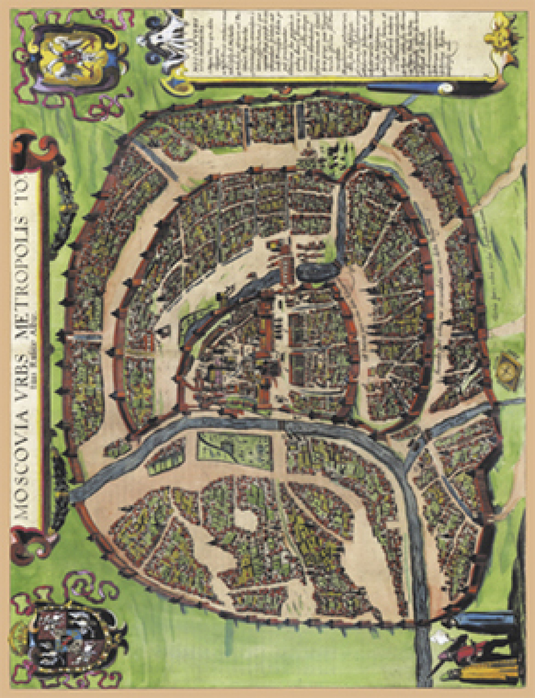
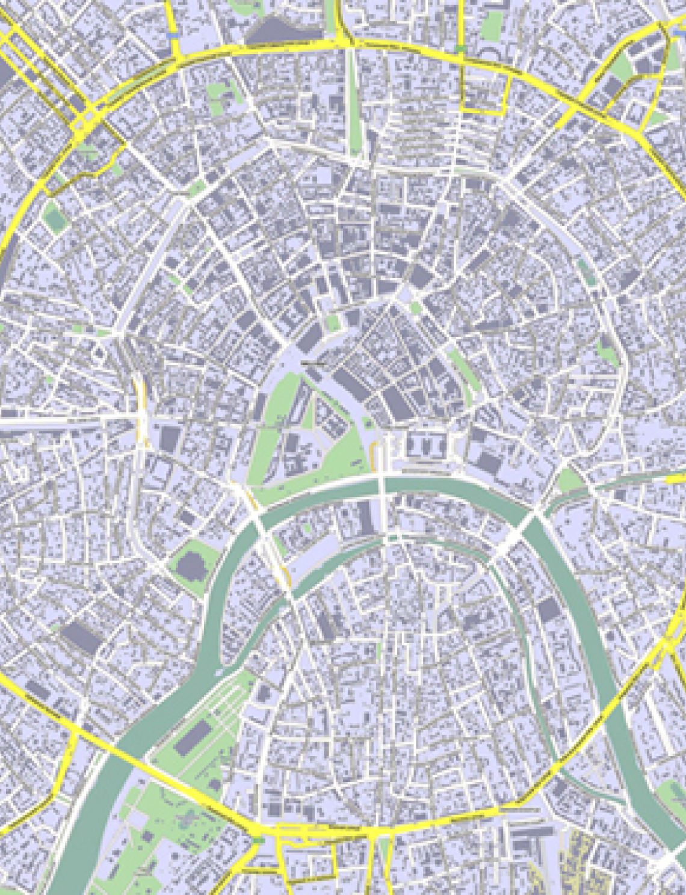
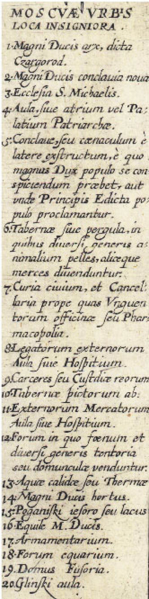

Гравюра на меди, 35 х 46 см, акварель, репродукция которой и представлена на этой карте - необыкновенное
произведение искусства. Это не карта, а картина.
Во второй половине XV века Москва стала официальной наследницей разгромленного Константинополя после падения
"второго Рима" в 1453 году. В 1472 г. русский государь Иван III, дед Ивана IV, женился на племяннице
последнего византийского императора Зое Палеолог, прибывшей в Москву и именовавшейся после женитьбы Софьей
Фоминичной. В 1497 г. был введен новый гербовый щит Руси - черный двуглавый византийский орел.
Россия-Тартария, таким образом, заявляла притязания на статус преемницы Византии.
В правом верхнем углу расположен этот герб в виде двуглавого орла, а в центре не менее известный Георгий
Победоносец, поражающий змия.
Немного удивляет название: "столичный город всей БЕЛОЙ Руссии". После правления Ивана IV (Грозного) во
время великой смуты и борьбы за престол огромной империи, окончившейся в конечном итоге победой Романовых,
Россия (она же Тартария, она же Монголия от слова "много") была поделена на три царства:
- Великая Русь, она же Золотая Орда, которая простиралась на всю южную и восточную часть от Владимира,
включая Сибирь;
- Малая Русь, она же Синяя Орда - Малороссия, территория современной Украины, она же Киевская Русь;
- Белая Русь, она же Белая Орда, располагавшаяся к северу и западу от Владимира, включавшая Московию,
современную Белоруссию, Литву, Смоленскую и Псковскую области. Вот столицей этого царства в тот момент и
была Москва, что и отразилось в названии этой карты, составленной в 1610 г. под конец великой смуты, за 3
года до восшествия первого Романова на престол.
Интересно, что в наследство от такого раздела территорий до наших дней дошла разница в выговоре. В Великой
Руси "окали", а в Белой - "акали". И сейчас в Москве и на северо-западе России "акают", а начиная от
Владимира и до центральной и восточной Сибири "окают". Граница этих говоров проходит как раз через г.
Владимир.
Карта расположена не традиционно по отношению к сторонам света. Север находится справа, запад - сверху, юг -
слева и восток - снизу. Поэтому правильно было бы ее рассматривать повернув на 90°.

Гравюра на меди, 35 х 46 см, акварель, репродукция которой и представлена на этой карте - необыкновенное
произведение искусства. Это не карта, а картина.
Во второй половине XV века Москва стала официальной наследницей разгромленного Константинополя после падения
"второго Рима" в 1453 году. В 1472 г. русский государь Иван III, дед Ивана IV, женился на племяннице
последнего византийского императора Зое Палеолог, прибывшей в Москву и именовавшейся после женитьбы Софьей
Фоминичной. В 1497 г. был введен новый гербовый щит Руси - черный двуглавый византийский орел.
Россия-Тартария, таким образом, заявляла притязания на статус преемницы Византии.
В правом верхнем углу расположен этот герб в виде двуглавого орла, а в центре не менее известный Георгий
Победоносец, поражающий змия.


Многие элементы до сих пор узнаваемы. Видна построенная к тому времени Колокольня Ивана Великого.
Отчетливо видна река Неглинка, которая в то время не была подземной. Перевод экспликации на карте дает нам
следующую информацию:
1. Крепость Великого Князя, называемая Царьград (относится ко всему Кремлю).
2. Новый дворец Великого Князя.
3. Церковь св. Михаила.
4. Подворье, терем или палаты Патриарха.
5. Кирпичное сооружение для появления Великого князя, а также место, откуда выкрикивают важнейшие
объявления. (Лобное место).
6. Торговые лавки или пристройки, где продают кожи и меха, а, кроме того, мелочный товар.
7. Общественное здание и Приказные палаты, вблизи место изготовителей мазей и бальзамов или торговцев
лекарствами.
8. Подворье для иностранных послов или гостиница.
9. Тюрьма для подозреваемых.
10. Лавки художников.
11. Подворье для иностранных купцов или гостиница.
12. Площадь, на которой продают сено и стройматериалы.
13. Горячая вода или купальня.
14. Сад Великого Князя.
15. Поганское озеро.
16. Конюшня Вел. Князя.
17. Арсенал.
18. Конная площадь.
19. Литейный двор.
20. Подворье Глинских.
Пожалуй, это единственная карта, не требующая дополнительных комментариев. Огромный город, укрепленный по
последнему слову тогдашнего военного искусства, выглядит величественным и несокрушимым.